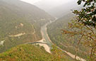
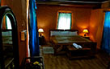
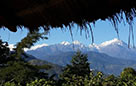

Trip Overview
Deep in the interiors of the remote North-eastern Himalayas, India Untravelled takes you back in time in a village of small tea farmers near Darjeeling , and then transports you on foot through breath-taking landscapes, to the lost kingdom of Sikkim, the last state to be annexed by India in 1975.
On this intimate journey from Darjeeling to Sikkim: Introduction to the Northeast Himalayas, you find yourself plucking, rolling and sipping the world’s finest organic teas on a family-run mountain farm. You hike along undulating hills covered by tea plantations, surrounded by majestic mountains, through charming villages, and finally across the Rangeet River, to Sikkim.
You acquaint yourself with Sikkim in its laid-back capital city of Gangtok, staying at a B&B-café-bookshop, where coffee and conversations flow smoothly. Your journey continues into the heart of West Sikkim, where you stay in a beautifully restored heritage Sikkimese hut built with natural materials, overlooking the snow-capped peaks of the Kanchendzunga Range (visible on clear days) and set amid an organic farm of walnut trees, orange orchards and seasonal vegetables.
We recommend that you ditch private cabs on this trail, and adopt the local mode of transport – shared taxis, the fabric of life in this remote region. For INR 100-300, shared taxis give you a chance to interact with locals on long journeys, and in a state with no public transport, are environmentally more efficient than private taxis.
There is much to love on this trail. The mountains echo with chants and prayers from Sikkim’s many Tibetan Buddhist monasteries. The locals, although initially shy, slowly warm up and are always up for a chat. The Sikkimese cuisine is an indulgence in organic, healthy food. Momos, Wai-Wai (instant noodles), and the locally brewed Hit Beer (must try!) are sold everywhere. And the serenity of living in the lap of the revered Mount Kanchendzunga for a few days is something that words can’t describe.
Please email us at untravel@indiauntravelled.com to plan and book your travels.
Trip Highlights
Pluck, roll and sip organic tea: Staying on a small tea farm in the mountains of Darjeeling district, you can trace the journey of the world’s finest tea from leaf to cup.
Local brews: Keep warm the way locals do – sip from a bamboo stem with a bamboo straw, the warm thomba,fermented from millets. Try the locally brewed Hit Beer in Sikkim.
Colonial tea estates: If Darjeeling conjures up images of sprawling tea estates for you, you’ll find yourself surrounded by one just minutes from your tea farm; only you and the tea, as far as you can see.
Hike from Darjeeling to Sikkim: A mostly flat and downhill walk from your tea farm to a southern village of Sikkim, along sprawling tea estates, rolling hills, dense forests and the Rangeet River. You walk into Sikkim across a rickety bridge above the river!
The café culture of Gangtok: Stay in a B&B with a café and bookshop, and sample the alternative art scene of the city.
Traditional Sikkimese homestead: Indulge in the old-fashioned luxury of a traditional Sikkimese farming estate (stones in the lowest layer, wood above, and a tin sheet cover), restored from the late 1800s.
Organic farm food: Indulge in seasonal organic veggies and fruits grown on the farm, and cooked with Sikkimese recipes. Try the famous Bhutanese Ema Datchi while you’re at it!
Village walks: Discover Sikkim on foot - quaint mountain villages (isolated homes as opposed to clusters), monasteries hidden away atop isolated hills, valleys wearing colors in summer and a white coat in winter.
Please email us at untravel@indiauntravelled.com to plan and book your travels.
Brief Itinerary
The Darjeeling to Sikkim: Introduction to the North-east Himalayas trail is a perfect introduction to the natural beauty, culture and life in this remote region. This trail can be customized based on your travel days and interests.
PLEASE NOTE: You need a medium level of fitness to embark on this trip. Reaching the farm in Darjeeling involves walking down for 10 minutes on a stone path, and the walk from Darjeeling to Sikkim takes 5 hours (mostly flat and downhill, some uphill stretches). You’ll be helped with your luggage but need to carry yourself ☺
Days 1 & 2: Farm-stay at an organic tea farm in the Darjeeling district
The Darjeeling to Sikkim: Introduction to the North-east Himalayas experience can start in Bagdogra, which is connected to the rest of India by domestic flight connections and is the nearest airport to both Darjeeling and Sikkim. Or at the New Jalpaiguri train station in Siliguri. From Siliguri, you can hop onto a shared taxi, and drive 3 hours to Darjeeling town. You will be picked up from Darjeeling town, to travel further to the village of Mineral Spring, an hour away.
Your first farmstay is quietly tucked away in a valley surrounded by the mighty Himalayas, where locals organically grow tea, seasonal crops and vegetables on small patches of land. Staying in a cozy hut designed with local materials, tea bushes grow and are pruned and plucked right at your doorstep!
Spend your time at the farm plucking, rolling and sipping the world’s finest black tea. Take a dip in the natural in-house pool on a warm summer afternoon. Chat with your host, who has grown up in these mountains, about life in Darjeeling. Get a first hand perspective on the separatist Gorkhaland movement. Read, write, paint, draw, do the things you love, in the quirky outdoor cafe at the farm, with the mighty Himalayas forming an inspiring backdrop.
Walk a few minutes away from the farm to find yourself in a sprawling tea estate stretching into the horizon. Go on a guided walk along the hills slopes of Mineral Spring, stopping for traditional lunch in a village home. Take a day trip to Darjeeling town and discover its sights if you must. Or walk in the surrounding mountains, chat with the hill folk, shadow the tea pluckers, refill that cup of tea, and reminisce about the colonial times gone by.
*Day 3: Walk from Darjeeling to Sikkim
Partake of one of the most unique (and local) experiences in the eastern Himalayas! You walk from Darjeeling, along tea estates dotting the landscape, past charming hill villages, through stunning mountain trails, into dense forests, across the pristine Rangeet River, and on a rickety river bridge, to Sikkim. If you’re lucky and the skies are clear, you’ll catch glimpses of the snow-capped Kanchendzonga Range every now and then. This is a gentle walk, flat and downhill in most parts, with only some uphill stretches, and takes 5 hours on an average level of fitness. You cool your heels in the river, take photography and resting breaks, and indulge in a packed picnic lunch along the way.
In the first village of Sikkim across the border, you taste your first plate of momos and the locally brewed Hit Beer – indulgences that make the ache in your feet worthwhile!
A taxi will meet you with your luggage at the border, and drive you to Gangtok.
You tuck in at a Bed & Breakfast (B&B) in quiet part of Gangtok, 10 minutes away from the hustle-bustle of the city’s happening MG Road.
Days 4 & 5: Explore Gangtok
Thus begins your acquaintance with Sikkim. Your B&B is set close to one of Gangtok’s quiet residential areas, and literally at your doorstep is a charming bookshop and café, where you’ll be served breakfast. Browse through books by authors from Sikkim and the region, and spend hours chatting with your host over delicious coffee and sandwiches – this is your best chance to sneak a peak into Sikkim’s alternative art scene and discuss everything from local books and food to travel and politics!
Over the next two days, explore the sights and sounds in and around Gangtok. Walk to MG Road for your first traditional Sikkkimese meal, find your way to a local monastery in the late afternoon (usually 4pm) to join their prayers and chants, drive to Sikkim’s biggest monastery at Rumtek, catch a panoramic view of the city from the Hanuman temple top, and treat yourself to hot chocolate and a great view at Baker’s Café. Get chatting with the friendly locals, and hear about the transition of Sikkim from an independent kingdom to India’s last annexed state – stories that will soon be lost in time.
Days 6, 7 & 8: Stay at a traditional heritage house in West Sikkim
Hop on to a shared taxi from Gangtok in the morning or afternoon, and make your way like the locals do, up the winding mountain roads to a small village near Rinchenpong in West Sikkim.
Villages in Sikkim typically comprise of individual homes scattered across the mountain slope, and not clusters of homes together as in many other parts of India. And so when you arrive at your estate, it’ll be you with the mountains, snow-capped on clear days, misty on others. Meet your host, who has grown up on this very estate, believed to have been built in the late 1800s, and transformed the surrounding land into an organic oasis of walnut, mandarin and rhododendron trees, and seasonal veggies.
Cozy up in the old-fashioned luxury of your hut, climb up to its small loft to feel the tranquility of the mountains and spot colorful birds, indulge in traditional Sikkimese dishes cooked from farm to table, chat with your friendly host about life in these remote parts, walk down into the valley of red rhododendrons for spectacular views of the mountains beyond, or just do nothing in the lap of Mount Kanchendzonga (visible on clear days from the farm).
Spend your time in West Sikkim exploring the surrounding villages and monasteries on foot. Stroll back in time to traditional Bhotiya and Lepcha houses, catch glimpses of everyday life in these isolated villages, chat with the friendly locals, visit the local bazaar for a hot plate of maggi, join the monastery chants in the afternoon and feel the mountain echo with prayers, spot rare species of birds, and do day trips to the nearby villages of Yuksom and Pelling if you like. But most of all, slow down, soak in the natural beauty, let the calm of the mountains soak your soul, and fall in love with the simple joys of life in Sikkim.
On the last day of your trip, take a shared taxi to Siliguri to catch your flight or train home, carrying with you fond memories and stunning photographs of your journey from Darjeeling to Sikkim in the northeast Himalayas!
*Note: The walk is only for Indian nationals as international tourists are not allowed to cross into Sikkim from this point.
Contact us at untravel@indiauntravelled.com to get the detailed itinerary for this trip or to book your dates.
Please email us at untravel@indiauntravelled.com to plan and book your travels.
Costs
Twin sharing: INR 28,500 per person
Solo traveller: INR 44,500 per person
Inclusions:
- 2 nights stay on an organic farm in Darjeeling District.
- 3 nights stay in a B&B in Gangtok.
- 3 nights stay on a heritage estate in West Sikkim.
- All meals in Darjeeling and West Sikkim.
- Breakfast while in Gangtok.
- Pickup from Darjeeling town to the farm.
- Guided walk from Darjeeling to Sikkim.
- Car transfer from the first village of Sikkim to Gangtok.
- Pickup & drop from & to Rinchenpong to the heritage farm.
- Guided village and monastery walk in West Sikkim.
- Taxes where applicable.
Does not include:
- Inter-town transfers, other than those mentioned.
- Meals and activities, other than those mentioned.
- Tips, shopping and personal expenses.
- Expenses arising out of unforeseen circumstances.
- Anything not mentioned in the inclusions.
Please email us at untravel@indiauntravelled.com to plan and book your travels.
Location:
Best time to visit:
The best months to visit Darjeeling and Sikkim are from October to April, when the weather is pleasant during the day, chilly at night, and chances of clear skies are high. Nature is unpredictable, and whether you can see the snow-capped Kanchendzonga Range or not, is really upto your luck! The locals expect the clearest skies in October / November. Monsoons paint Sikkim a lush green with seasonal waterfalls, but also bring leeches to the hills – so the months from June to August are best for rain lovers.
Fitness
You need a medium level of fitness to embark on this trip. Reaching the farm in Darjeeling involves walking down for 10 minutes on a stone path, and the walk from Darjeeling to Sikkim takes 5 hours (mostly flat and downhill, some uphill stretches). You’ll be helped with your luggage but need to carry yourself ☺
What to pack
Weather in the mountains can be quite unpredictable. It’s best to pack in layers, and be prepared for warm, sunny afternoons as well as cold evenings. Carry good walking shoes, umbrellas, sunhats, essential medicines, binoculars for birdwatching, and a camera to capture some unforgettable moments. Don’t forget a good water bottle so you can refill filtered water at your accommodations instead of buying plastic mineral water bottles.
Things to note
- Cash and ATMs: Only cash is accepted at the homestays. ATMs are located close to bus stops and in the bigger towns.
- Food: Both vegetarian and non-vegetarian food is available on this trail.
- Bathrooms: Each room comes with an attached bathroom, running or bucketed hot water and western style toilets.
- Electricity: Power cuts happen sometimes; please be prepared for them by carrying torches and spare batteries as needed.
- Phone, Internet and TV: There are no TVs in the rooms, but plenty of natural beauty to keep you entertained. Most phone networks work well. Free Wifi is available in the dining area of the farm near Darjeeling and at the café of B&B in Gangtok.
- Pets: At your own risk at the farm near Darjeeling and in West Sikkim; no special pet food available. Not allowed at the B&B in Gangtok.
- Alcohol: Traditional brews are offered at the farm near Darjeeling. Not allowed on the rest of the trail.
Please email us at untravel@indiauntravelled.com to plan and book your travels.
Gallery
Darjeeling (Mineral Spring)
- Hut at the farm
- A night at the farm cafe, sipping thomba
- Interiors of the hut (with attached bathroom)
- Cooking in traditional style
- Introspective moments
- Navin, host at the farm
- Prayer flags at the farm
- Stone path to walk down to the farm
- Tea and the times gone by
- Tea bushes at the farm
- Tea garden near the farm
- Tea pluckers
Gangtok
 Cafe for breakfast and conversations
Cafe for breakfast and conversations- Crossing the Rangeet River
- Debates at Rumtek Monastery
- Hike from Darjeeling to Sikkim
- River Teesta meets the Rangeet River
- Tea above the rooftops of Gangtok
- Through the forests to Sikkim
- Traditional Sikkimese meal

{kind=link}
{kind=link}
.jpg){kind=link}
{kind=link}
{kind=link}
{kind=link}
{kind=link}
{kind=link}
{kind=link}
{kind=link}
{kind=link}
{kind=link}
{kind=link}
{kind=link}
{kind=link}
{kind=link}
{kind=link}
{kind=link}
{kind=link}
West Sikkim
- A traditional monastery in West Sikkim
- Close up shot of Mt Kanchendzonga. by Jakub Michankow
- Thendup, host at the farm
- Your hut on the farm
- Fleeting glimpse of Mt Kanchenjunga
- Glimpses of village life. Photo by by Sharada Prasad CS
- Loft of your hut, to hear the silence of the mountains
- Monastery on an isolated hill
- Old-fashioned luxury in the rooms
- Organic food from farm to table
- Rhododendrons in bloom
- Seasonal mustard fields
- Sikkim is full of moments like these.
- Snow capped peaks on clear days
- View of Mount Kanchendzonga from the farm on clear days
{kind=link}
{kind=link}
{kind=link}
{kind=link}
{kind=link}
{kind=link}
{kind=link}
{kind=link}
{kind=link}
{kind=link}
{kind=link}
{kind=link}
{kind=link}
{kind=link}
{kind=link}
Please email us at untravel@indiauntravelled.com to plan and book your travels.
Reviews
“All the home stays were beautiful .... Navin at the Darjeeling farm is an amazing host ... We had a great time.”
~ Anvita Dasari, travelled with friend in June 2017
“Had a memorable holiday, thanks to you and all our hosts! This is one trip where I felt that everything was well managed end to end. I was particularly impressed by the pretrip experience, proactive updates, followups and planning - not many operators manage it so well prior to the trip. And the trip itself was fab! Stays well chosen, smooth transition from one to the next. Some details about each:
Tathagata farm: Lovely location, excellent hospitality and services, Navin and his team went out of the way to look into our every requirement.
Bookman's B&B: Very well maintained rooms with all amenities. Pick-up could have been arranged with a driver who knew the place.
Yangsum heritage farm: This was a pleasant ending to the trip. A great stay in all respects, location, hospitality, services, warm and friendly people, delicious food, personal attention. Thendup is an excellent host and his team does a very good job of taking care of guests!
So, all in all, very impressed and would like to go on more similar trips with you in future.”
~ Sarita Dhillon, travelled with parents in March 2017.
“Thank you so much for arranging everything. The three of us thoroughly enjoyed our stay at all the three places and our hosts were more than wiling to help us with whatever we wanted. The trail from Darjeeling to Sikkim was splendid and I am looking forward to more such trails. Overall, we had a great experience.”
~ Susan, travelled with friends in October 2014.
“The Northeast Experience was among the best trips I have ever taken in India. India Untravelled's careful curation of accommodation and activities enabled a rich, varied, comfortably-paced and unforgettable experience. Our group of three women enjoyed interacting with local hosts and guides, observing rural lifestyles and being close to some of the most pristine natural areas in India. The Darjeeling to Sikkim trek and the homestay in West Sikkim were the highlights of our trip, and we will recommend this experience to any adventurous and discerning traveller.”
~ Manda Foo, Singapore, travelled with friends in February 2015
To feature your review / testimonial, please write to untravel@indiauntravelled.com.
Please email us at untravel@indiauntravelled.com to plan and book your travels.
Responsible Travel
How this trip makes a difference:
- The farmstay in the Darjeeling district is on an organic farm, where all tea, vegetables and herbs are grown organically. It has been set up by two brothers from the village, working hard to augment farming incomes of the residents through tourism.
- The heritage estate in West Sikkim is run by a descendant of the family who originally built it, and has lovingly restored it with locally sourced materials, avoiding the carbon footprint of building from scratch.
- All guided walks on this trail are with local guides, who have grown up in these remote mountains and are turning to tourism to complement farming incomes.
- All accommodations on this trail give you a chance to interact closely with the local hosts and understand life (and how life has changed) in the region.
- We recommend that you take shared taxis on this trail, to save the fuel consumption and carbon footprint of private taxis, and to get entrenched in the fabric of local life in these parts.
- The accommodations on this trail are either run by or employ staff from the local village communities to look after travellers, creating an alternate source of income through tourism.
- Host families on this trail are environmentally committed, with measures like organic farming, volunteering, and restoration and conservation efforts in the region.
- All food provided in the accommodations is freshly prepared in the host kitchen, using locally grown and locally sourced ingredients.
- The revenues generated from this trip are reinvested to sustain efforts in organic farming, as well as to further the cause of responsible travel in India.
How you can make a difference on this trip:
- Take the time to interact with your hosts and think of yourself as a guest at a family home. Please don’t expect room service!
- Carry a good water bottle and ask to refill filtered drinking water at your accommodation. Refrain from buying numerous plastic mineral water bottles.
- Pack your bags with environmentally friendly things. Carry as little plastic as possible.
- Do not leave behind any non-biodegradable waste. Carry batteries and other toxic waste back to the cities where waste management is in place.
- What you wear has an impact – dress appropriately.
- Respect the local culture and refrain from physical intimacy in public places.
- Try local food as much as possible and avoid packaged food. Ask for modifications in the food according to your taste, instead of wasting it.
- Avoid excessive consumption of alcohol and refrain from drugs, especially in public places.
- Seek permission before photographing people, so their privacy is respected.
- Do not pluck any medicinal plants & flowers, and do not disturb the wildlife.
Please email us at untravel@indiauntravelled.com to plan and book your travels.
Please email us at untravel@indiauntravelled.com to plan and book your travels.